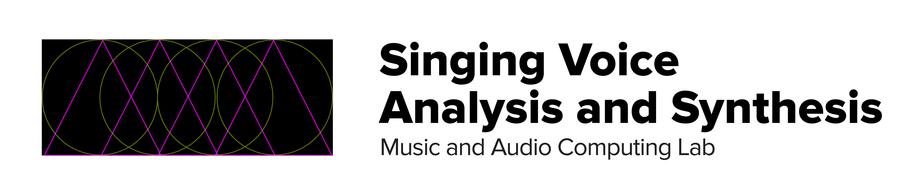

Overview
We introduce the Children's Song Dataset (CSD) which contains vocal recordings of 100 children's songs in Korean or English. The audio recordings are precisely aligned with the MIDI transcriptions and lyrics annotations and so we expect that the dataset can be useful for various singing voice analysis and synthesis tasks.
Dataset Contents
The dataset is composed of 50 Korean and 50 English songs sung by a Korean female professional pop singer. Each song is recorded in two separate keys, ranging from 3 to 5 semitones, resulting in a total of 200 audio recordings. We collected the children's songs to avoid the possible copyright issues in commercial pop music Each audio recording is paired with a MIDI transcription file and a lyrics annotation file.
| Lanauge (number of songs) | Korean (50), English (50) |
|---|---|
| Number of keys per song | 2 |
| Pitch range | F3 - F5 |
| Audio | 44.1Hz, 16bit in Wav format |
| MIDI | Monophonic MIDI without any expressions |
| Lyrics | Grapheme level annoation in a plain TXT format |
Table.1 The summary of CSD dataset.
MIDI and Lyric Annotation
The MIDI data consists of monophonic notes. Each note contains onset and offset times which were manually fine-tuned along with the corresponding syllable. We annotated the note onset and duration with consistent guide lines throught various expressions and a MIDI note do not include any expression data or control change messages.
Lyrics are annotated in grapheme level with a plain text format. Each syllable matches with one note and when a syllable corresponds to multiple notes, it is replicated.
Samples
CSD dataset is recorded in both English and Korean. Some songs are recorded in both Korean and English and they have same meanings. Those samples are shown as below.
| Song | English | Korean |
|---|---|---|
| Twinkle Twinkle Little Star 작은 별 |
||
| Bingo 빙고 |
||
| Rudolph the Red Nosed Reindeer 루돌프 |
||
| O Holy Night 오 거룩한 밤 |
||
| White Christmas 화이트 크리스마스 |
||
| Butterfly 나비야 |